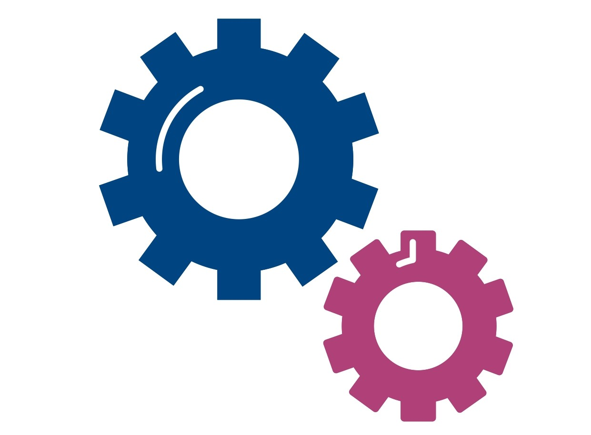

¿A qué nos referimos cuando hablamos de herramientas de comunicación y gestión de conflictos?
A técnicas y recursos aplicados que, al hacerlos conscientes y entrenar su uso, nos permitirán desarrollar habilidades para fortalecer nuestros vínculos, lograr un trato adecuado y gestionar conflictos en cada espacio de interacción, incluido el educativo. Facilitan el abordaje de conflictos interpersonales e institucionales de modo creativo y la resolución de situaciones problemáticas de manera pacífica, promoviendo así el bienestar individual y social en la escuela.
Las herramientas son diversas y, en esta oportunidad, desarrollaremos algunas de las más relevantes para nuestro ámbito de trabajo, a saber:
⚙️Comunicación asertiva
⚙️Escucha activa
⚙️Pregunta
⚙️Legitimación
La descripción de modo separado atiende a un carácter didáctico. No obstante, en la mayoría de casos, su aplicación es interactuada, integral y dinámica, permitiendo:
🔵Una actitud colaborativa y pacífica para resolver conflictos entre las personas.
🔵La construcción de soluciones que satisfagan a todas/os sus participantes.
🔵La habilitación de espacios para el diálogo basados en el respeto y el reconocimiento mutuo.